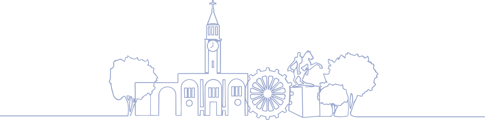

Una Guarenas más humana
Un portal pensado para ti: encuentra en un solo lugar los trámites, las noticias, la gestión y la identidad del municipio. Accede rápido a lo que necesitas y mantente al día con todo lo que construimos, cada día, por nuestra querida Guarenas.
Lo que construimos juntos
Aseo Urbano
Recolección, barrido y manejo responsable de los desechos en cada parroquia. Consulta las rutas, horarios y cómo reportar incidencias.
Noticias de Guarenas
Resultados que se ven en la calle
Cada cifra es trabajo constante en las calles de Guarenas. Del alumbrado a la vialidad, de las escuelas a los programas sociales, la gestión avanza todos los días junto a las comunidades. Estos son los resultados que puedes ver y tocar en tu parroquia.
Nuestra cultura, nuestro orgullo
Guarenas late al ritmo de sus tradiciones: la Parranda de San Pedro —Patrimonio Cultural Inmaterial de la Humanidad—, sus fiestas patronales, su historia colonial y sus paisajes. Un legado vivo que heredamos, celebramos y cuidamos entre todos.
Ríos, cascadas y paisajes majestuosos te esperan. Recorre los puntos turísticos, patrimoniales y naturales del municipio.
Conoce GuarenasLugares para visitar
Tradiciones que nos identifican
Manifestaciones culturales del municipio Ambrosio Plaza — algunas declaradas Patrimonio Cultural Inmaterial de la Humanidad por la UNESCO.
Guarenas en cifras
Nuestro municipio en datos — Ambrosio Plaza, estado Miranda.
Lo que dice nuestra gente
Guareneros y guareneras comparten cómo viven los cambios en su municipio.
{{ t.quote }}